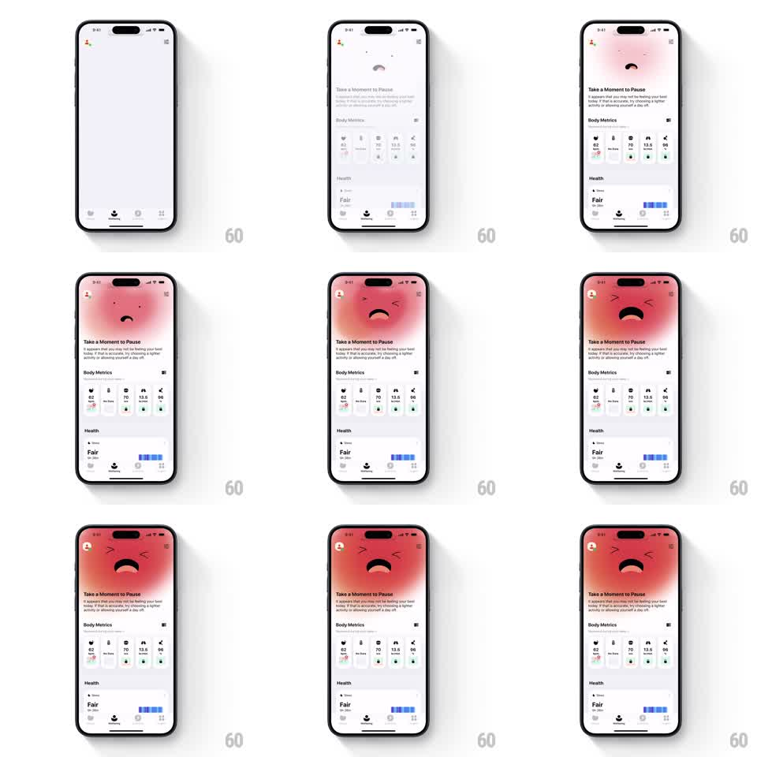

Media
Frame-by-frame

Rebuild this interaction 1:1: Gentler Streak's sad-reaction pause - tapping the sad mascot floods the screen with its blush-pink color, the face scaling up as the wellbeing sheet assembles beneath it.

Rebuild this interaction 1:1: Gentler Streak's sad-reaction pause - tapping the sad mascot floods the screen with its blush-pink color, the face scaling up as the wellbeing sheet assembles beneath it. ## Integration Integration: stack-agnostic spec - springs given as stiffness/damping, timed motions as duration + curve; map every value to your framework and animation library of choice. ## Scene Wellbeing screen: a small mascot face (sad expression) in a tinted header circle, "Take a Moment to Pause" headline with supportive copy, a Body Metrics grid of stat cards, and a Health section with a Fair rating bar below. ## Motion spec Pattern: full-bleed color expansion from the mascot, ~800ms. - Tap the mascot: its pink blush color expands outward from the face in a full-bleed radial flood (400ms, ease-out), washing the whole header area. - The face scales up with the flood (1 to 1.6, spring stiffness 260 damping 18), its sad expression staying centered as the tint deepens around it. - The headline and copy fade in over the tinted field (300ms, 100ms after the flood starts). - The Body Metrics cards rise and stagger in (250ms each, 60ms stagger) once the flood settles; the Health section fades in last. - The tint holds as the screen's resting state; tapping back reverses the flood into the small circle. ## Calibration - The flood radiates from the face itself - an edge wipe would detach the color from its source. - The face grows but never crops; it stays fully inside the header zone. ## Reduced motion Header tint fades in; face stays at rest size. ## Don't miss - The expression is the payload - keep the sad face crisp at the flood's center while everything around it blushes. - The content below (metrics, health) waits for the flood; a simultaneous entry reads as a page load, not a reaction.